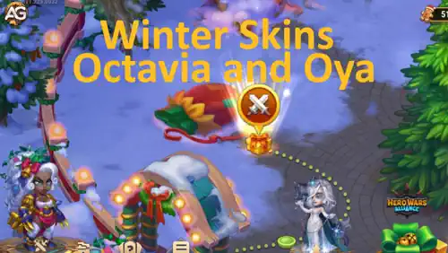

The introduction of the Winter Skins for Octavia and Oya in recent game updates has generated significant excitement among players. These visually captivating designs not only add a festive, seasonal flair to the heroes but also come with noteworthy implications for gameplay and overall hero performance.
Beyond their aesthetic appeal, their true value lies in the strategic advantages they offer by enhancing key stats. To fully grasp their impact, it is crucial to evaluate how these skins influence critical attributes, determine the best order for upgrades, and ensure they complement the heroes' core abilities and team synergies effectively.
This guide will provide a comprehensive breakdown of the Winter Skins for Octavia and Oya, focusing on their design, stat bonuses, and impact on gameplay. You'll learn how to prioritize upgrades, align these skins with each hero’s unique abilities, and maximize their effectiveness in various team compositions. Whether you're a casual player or a strategist, this guide will help you make informed decisions to enhance your performance.

Winter skins of Octavia and Oya in action from the game Hero Wars Alliance, developed by Nexters.
Octavia: Balancing Agility and Support with Winter Skins
Octavia’s role as a support hero is unique. Her abilities focus on protecting allies while enhancing her energy gains through strategic dodges. However, her new Winter Skin prioritizes dodge statistics, which may not be her most effective upgrade path.
Imperial Guard Ability and Its Implications
The Imperial Guard is Octavia's signature ability. This skill allows her to avoid being targeted by enemy abilities and attacks, provided her starting allies remain alive. When allies dodge attacks, both Octavia and her Guard receive energy boosts.
While the Winter Skin enhances her dodge stat, it’s worth noting that Octavia can only dodge basic attacks, not abilities. This limits the direct benefits of dodge stats. To optimize her performance, focusing on physical attack and health stats is more beneficial.
Octavia’s Skins Priority and Analysis
1st Priority: Celestial Skin+ (Physical Attack)
The Celestial Skin+ offers a double boost to physical attack, which significantly enhances her support abilities by increasing the potency of her skills.
2nd Priority: Cybernetic Skin (Physical Attack)
This skin provides a solid physical attack increase. While not as powerful as the Celestial Skin+, it is still a strong option for improving her support and damage potential.
3rd Priority: Romantic Skin (Health)
With this skin, Octavia gains a substantial health boost, enhancing her survivability and allowing her to stay active in battle for longer.
4th Priority: Default Skin (Agility)
The default skin provides a moderate boost to agility. While agility contributes to her overall stats, it falls short compared to physical attack and health improvements.
5th Priority: Winter Skin (Dodge)
The Winter Skin enhances dodge stats, but its utility is limited due to the specific mechanics of Octavia’s abilities. This makes it a lower priority for her overall effectiveness.
Strategic Recommendations for Octavia
To maximize Octavia’s performance, prioritize skins that enhance physical attack and health before considering agility or dodge-focused options. Her role as a support hero benefits more from increased damage output and survivability than from enhanced dodging capabilities.
Oya: Balancing Warrior Strength and Tank Durability
As a front-line warrior, Oya relies on her primary Strength stat to dominate in battle. Her abilities demand a balance of physical attack and health, making her a hybrid between a warrior and a tank. The new Winter Skin, while visually striking, adds armor a valuable but less critical stat compared to strength and health.
The Strength of Oya's Abilities
Oya’s abilities focus on dealing damage while withstanding enemy assaults. Prioritizing her Strength stat not only boosts her offensive power but also improves her survivability as a tank-like warrior.
Oya’s Skins Priority and Analysis
1st Priority: Strength Skin (+1365 Strength)
This skin provides a significant boost to Oya’s core stat, making it the top choice for improving both her damage output and durability.
2nd Priority: Health Skin+ (+213,290 Health)
Health is essential for Oya to sustain her position on the front line. The Health Skin+ offers a massive boost, ensuring she can absorb more damage during battles.
3rd Priority: Physical Attack Skin (+7095 Physical Attack)
This skin enhances Oya’s offensive capabilities by increasing her physical attack stat, making her a more formidable warrior.
4th Priority: Winter Skin (+10,650 Armor)
The Winter Skin adds a considerable armor boost, improving her tanking ability. However, armor is less impactful compared to the benefits provided by strength and health.
Strategic Recommendations for Oya
Oya’s Winter Skin is visually appealing but should be considered a secondary upgrade. Focus first on skins that enhance her Strength, Health, and Physical Attack, aligning with her dual role as a warrior and tank.
Comparative Analysis: Octavia vs. Oya Winter Skins
The Winter Skins for both heroes offer defensive-oriented stat boosts—dodge for Octavia and armor for Oya. However, their prioritization within each hero’s build diverges based on their unique abilities and roles.
Octavia: Her support role requires prioritizing physical attack and health to maximize energy gain and sustain allies. Dodge-focused stats, as provided by the Winter Skin, are less impactful.
Oya: Her hybrid role benefits more from strength and health to balance damage output and survivability. The armor boost from the Winter Skin is useful but not essential.
Maximizing the Value of Winter Skins in Gameplay
While Winter Skins add seasonal flair, they should be integrated thoughtfully into each hero’s progression plan. Prioritize skins based on the stat boosts that align with the hero’s core strengths and abilities. For players looking to make the most of their investments, careful planning can turn these cosmetic upgrades into strategic assets.
FAQs
How does Octavia's Winter Skin impact her gameplay?
The Winter Skin enhances Octavia's dodge stats, but its impact is limited since her abilities focus more on energy gain from ally dodges rather than her own.
Why is dodge a low priority for Octavia?
Octavia can only dodge basic attacks and will only become the target of enemy abilities if she is the last ally standing. This makes the dodge stat less impactful compared to physical attack and health, which directly enhance her overall effectiveness.
Is Oya’s Winter Skin worth upgrading?
Oya’s Winter Skin offers an armor boost, which is useful but should be a lower priority compared to skins that enhance her strength and health.
What is the best skin for Octavia?
The Celestial Skin+ is the best choice for Octavia, providing a double boost to physical attack and significantly improving her support capabilities.
Which stat is most important for Oya?
Strength is Oya’s most important stat, as it boosts both her offensive and defensive capabilities.
Can the Winter Skins be used effectively?
Yes, the Winter Skins can be effective when used strategically. For Octavia, they can be a decorative option, while for Oya, they add tanking ability for specific battle scenarios.
Conclusion
The Winter Skins for Octavia and Oya are beautifully designed and add seasonal charm to the game. However, their real value lies in how they align with each hero’s gameplay mechanics. For Octavia, focusing on physical attack and health remains the most effective strategy, while for Oya, prioritizing strength and health ensures she can excel as a tank-warrior hybrid. By understanding the strengths and limitations of these skins, players can make informed decisions to enhance their heroes’ performance.
Did you like our Octavia and Oya Winter Skin Guide? Is there something you didn't understand or would like to suggest changes to? We invite you to join our comment section on the Alexandre Games Blog page. Feel free to express your opinion, clarify your doubts, and share your suggestions. Click the button below to get started: